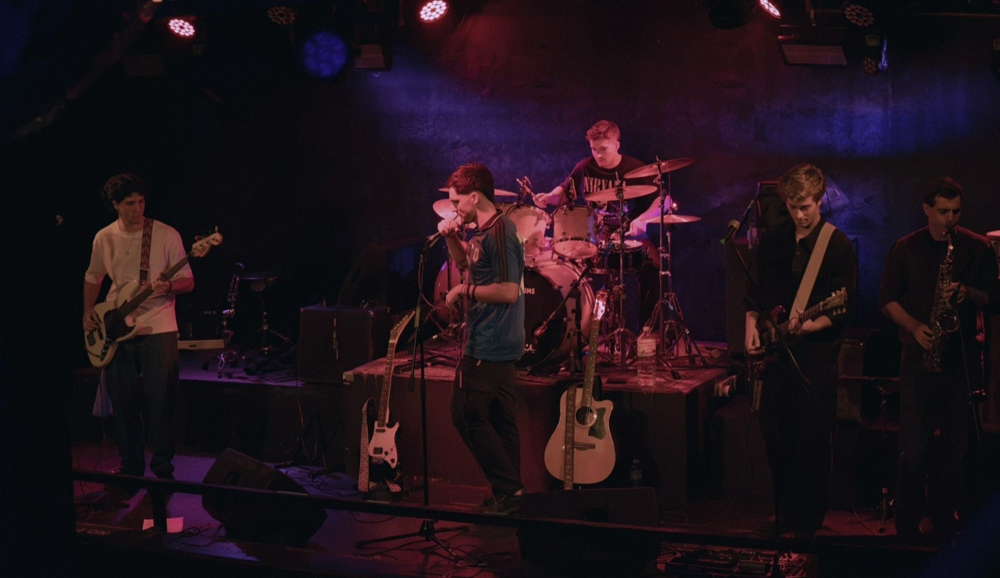
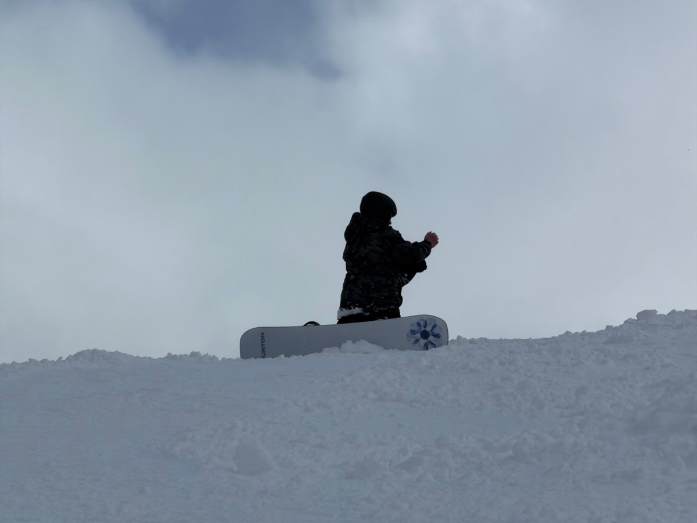
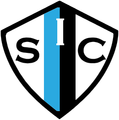

Batería · Video
Detrás de la batería
Soy el baterista de BLEND. La mayoría de los videos de la banda los grabé y edité yo.
@blendbanda_ ↗Ver el show en Makena ↗Ver Gira a Lobos ↗Ver el cover de El Riesgo ↗
Licenciado en Comunicación Social · Buenos Aires
Cuento historias con sonido, imagen y palabras. Edito, produzco, escribo y entrevisto. Me interesa todo lo que pasa entre la música, la historia, el deporte y los medios.
01
Mi trayectoria como una línea de tiempo de edición. Cada clip es una etapa: tocalo para ver el detalle.
02
Una selección de proyectos audiovisuales, de redacción y podcast.
03
Todas mis notas, agrupadas por el lugar donde las escribí.
04
Soy curioso, investigador y proactivo. Me formé en Comunicación Social en la Universidad Austral y trabajé en periodismo digital, gestión pública y producción audiovisual.
Toco la batería en BLEND, jugué al rugby doce años en el San Isidro Club y pasé una temporada de invierno trabajando en Breckenridge, Colorado. Desde los 18 trabajo también en PANZA, nuestro emprendimiento familiar.
Herramientas
05
Lo que no está en ningún plan de estudios, pero también me formó.

Batería · Video
Soy el baterista de BLEND. La mayoría de los videos de la banda los grabé y edité yo.
@blendbanda_ ↗Ver el show en Makena ↗Ver Gira a Lobos ↗Ver el cover de El Riesgo ↗

Work & Travel · 2025–26
Cuatro meses como Lift Operator en Breckenridge (Vail Resorts), Colorado. Independencia, un entorno multicultural y un trabajo de alta exigencia.

Rugby · 2010–2022
En el San Isidro Club aprendí a liderar, a ser liderado y a jugar en equipo bajo presión.
06
Audiovisual, redacción y podcast
¿Tenés un proyecto? Hagámoslo juntos.
Fin